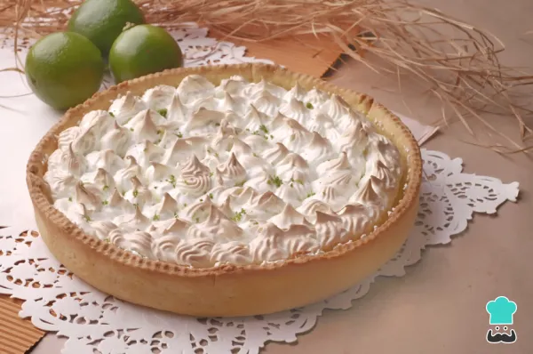

Pie de Limon

Lemon pie with meringue is one of the most demanded to serve during family and friends gatherings.
The result will be a much more economical cake made according to our personal taste.
Ingredients
- 2 cups of flour (280 grams)
- 4 eggs
- ½ cup lemon juice
- 1 cup condensed milk (240 grams)
- 2 teaspoons baking powder
- 3 tablespoons of powdered sugar
- 1 cup sugar (200 grams)
- 125 grams of butter
Steps
- The first thing to do is to prepare the base dough for the lemon pie. To do this, mix the flour with the baking powder, one egg, the butter and the powdered sugar. You will have to knead until you obtain a smooth and soft dough.
- When you have it, line the entire mold with the dough and bake it for 10 minutes at 170 ºC. When ready, remove and set aside.
- Now it is the turn of the lemon pie filling. Mix the lemon juice with the condensed milk until it forms a smooth cream. Pour this cream over the dough you baked in the previous step and set the pie aside.
- Now it is the turn of the lemon pie filling. Mix the lemon juice with the condensed milk until it forms a smooth cream. Pour this cream over the dough you baked in the previous step and set the pie aside.
- Now that you have the filling, all that remains is the meringue for the topping. To do this, separate the whites from the yolks of the remaining three eggs and beat the whites until stiff. When they are almost ready, gradually add the sugar while continuing to beat.
- With the help of a piping bag, spread the meringue in the shape of peaks. If you don't have a piping bag, simply take a spatula and spread it all over the top of the lemon pie. Now bake the pie for a few minutes so that the meringue hardens slightly and turns golden brown.
- When it is ready, remove it, let it cool in the refrigerator and you can serve the lemon and meringue pie. As you can see, this is a very simple and delicious recipe, ideal to serve with a glass of white wine or cava.